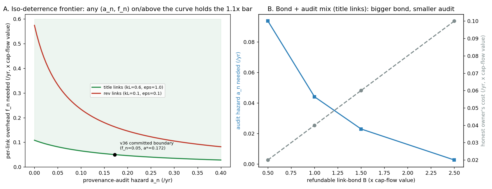
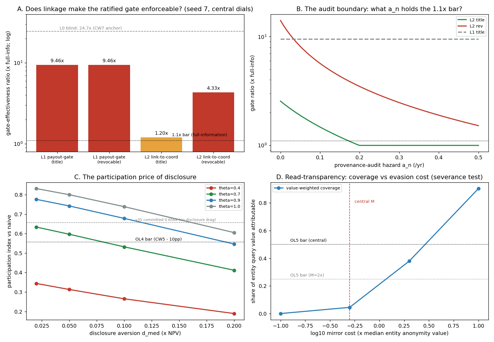

In plain language
Companion to RESULTS - v36.0 Owner Linkage.md. July 18, 2026. — v2, same day: rewritten under the house rule that plain-language docs define their jargon with examples and analogies, and corrected on one important nuance — what the network actually "knows" about owners. v1 kept for history. Every number traces to results_v36.json; this is a model of the design, not a forecast.
The question in one sentence
EDEN just adopted a rule (DR-18) that caps how much royalty income any one real owner can pull through companies — but a cap on "the real owner" only works if the network can tell which companies share one. Nobody had said how EDEN would ever find that out. The owner's idea: you can't touch the money unless you've registered the ownership. No registered link, no payout. This simulation asks: does that survive contact with someone determined to stay hidden? And the second half of the idea — making companies search in the open, since they can see everything too — does that work?
First, the correction that matters: what "registered" actually means
The v1 of this note said "the network knows the company is yours." That's the wrong way to say it. EDEN never learns your name. What it verifies is stricter and stranger: that the owner behind a company is exactly one real, living, verified human — the same one everywhere they appear.
Think of a tournament wristband, issued once per person at the door, impossible to transfer. The referee doesn't know your name and doesn't care — but they know you're the same player in every match, they can count your fouls across the whole tournament, and your record follows the wristband for life. That's an EDEN account. "Registering as the owner" ties the company to your wristband, not to your driver's license. Your name enters the picture only where EDEN touches the ordinary legal world: cashing out to regular money at the fiat bridge (the doorway between EVE and dollars, where bank-style ID checks live), or signing a bulk data-export license.
So the honest phrase isn't "we know who owns it" — it's "every company is anchored to one accountable human." Accountable because: one wristband each (you can't be two people), wristbands die with their wearer (so nothing is immortal), and a wristband's history is permanent (so reputation sticks). That's everything the anti-dynasty and anti-shell rules actually need. Names turn out to be optional.
What we found, in plain terms
1. The polite version of the rule doesn't work. If the only thing gated is the payout — money moving from a company's account to a human's account — a rich owner never needs to register anything. They leave the money in the companies and let the companies do the spending: the corp buys the jet, the house, the art. (The jargon for this is "in-kind extraction" — taking your profit as stuff the company owns instead of as money in your name. Think of an executive who takes a tiny salary but lives entirely on the company jet and expense account.) In the model, a wealthy owner playing this game through 25 shell companies — empty companies that exist only to hold things, like 25 lockers rented under different fake club names — keeps about 9.5× more than the cap allows. And auditors can't help, because you can't audit a registration that was never made. A rule that only gates withdrawals is a rule for honest people.
2. The strong version works — three changes turn it from decorative into real:
- No registration, no business. A company must carry a registered human owner to hold income-producing assets at all — not just to pay out. That kills the spend-through-the-shell trick, because unregistered shells can't own anything worth spending.
- The registration IS the deed. Like a house deed: whoever is on it owns the house, full stop, and only they can sign it away. Why does that matter so much? Because of nominees — "straw owners," people paid to pretend the company is theirs while secretly fronting for the real owner. If the registration is the legal truth, then your straw owner actually owns your company — and if he decides to keep it, there's no court to run to, because the arrangement existed to break the rules in the first place. It's like putting your house in a stranger's name to dodge taxes: congratulations, it's legally his house. That fear is what makes straw owners expensive and rare. (We tested the opposite design too — registrations the company can reassign at will. Then straw owners become cheap disposable puppets, and the evasion comes back at 4 to 14× the cap. The deed version is not optional.)
- Watch for income that doesn't match the story. All money flows in EDEN are public, so a wristband suddenly collecting enormous royalties from work it never contributed to sticks out — the way a tax office notices a declared librarian buying yachts. That statistical flag (the provenance audit — "provenance" just means where things came from) routes the case to EDEN's normal jury spot-checks. No names needed; the mismatch is visible on the wristband's own public record. Our number: catch fronting arrangements at roughly a 1-in-6 chance per year and the whole straw-owner business stops being profitable. That audit doesn't exist yet — pricing what it costs to run is named follow-up work.
3. It's a cliff, not a dial. People don't get 10% more honest when enforcement rises 10%. Evasion pays until, suddenly, it doesn't — and then everyone registers. In the model, ~12% of owners (the richest, who hold 69% of the affected income) evade in every lenient variant, and all of them flip to honest the moment the best trick stops paying. Design lesson: overshoot the enforcement boundary comfortably; sitting at it means tiny cost changes flip the whole registry.
4. None of this touches the dynasty defense — that wall holds on its own. We wired the worst versions of all this (including the stickiest possible kickback scheme) into the inheritance simulation from v35. Dynastic persistence — plain meaning: of the families on top today, how many are still on top five generations later? — stayed at ~10.4–10.5%, the same as pure chance, in every variant. Why: assets still expire on a human lifetime and a fixed term, and that expiry outruns any skimming scheme. Ownership caps and dynasty prevention are two separate walls; registration repairs the first and never needed to touch the second.
5. Chains of companies fool a lazy version of the rule. If "count shells together" only looks one hop up (who owns this company?), you hide by making a company own the company that owns the company. The fix is boring and total: follow the chain of who-owns-whom all the way up until you reach humans — however many layers. One-hop checking: full evasion (the whole 25× comes back). Follow-the-chain: zero. This has to be written into the rule explicitly, and it's also why every chain must end at a wristband — a company can't be owned by nothing.
6. The price of asking everyone to register is real but modest. Some legitimate businesses hate disclosure and will stay out. At our central guess for how much they hate it, corporate participation drops from about 66% to about 60% of the no-rules world. What actually threatens participation is the older v35 worry (whether builders price their royalty streams into their wages), which is still the top thing for a pilot to measure — now alongside "how much do owners hate disclosing," which nobody has measured either.
7. The "watch what they search" half doesn't survive — and the meaningful half was already free. We tested logging what companies look up. Problem: EDEN's ledger is public data, like a published phone book — and you can't meter who reads a phone book, because anyone can photocopy it once and read their copy in private forever. In the model, 95% of the corporate search activity you'd care about evades the log (big companies just maintain their own copy of the public ledger; hiring humans to search for them — humans read anonymously by constitutional design — is even cheaper). So we dropped that half of the idea, exactly as the test plan said we would if the numbers came out this way. The consolation is real, though: every paid lookup — every data license, every machine-pay query — is a transaction, and all transactions are public. When a corporation pays to use people's work, everyone can already see who paid, whom, and for what. The two-way street exists wherever money moves; what can't be built is a camera pointed at readers of public information — and EDEN long ago decided not to point cameras at readers.
The bottom line
The owner's instinct was right, and the simulation sharpened it into four enforceable words-of-law: register to own (a company holds nothing without a human-anchored registration), the registration is the deed (straw owners can legally rob their principals — that's the deterrent), follow chains to the humans (no hiding behind companies-owning-companies), and audit income against contribution (the yacht-buying librarian check). Do all four and the shell game drops from "25 shells = 25 caps" to "25 shells = 1 cap, plus a fee for trying." Skip any one and the hole reopens. And transparency was already a two-way street where it counts — every EVE a company spends is public — it just can't be, and shouldn't be, a camera on reading.
Words used here (quick reference)
Shell company — an empty company that exists only to hold assets; a rented locker with a company name on it. In-kind extraction — taking profit as things the company buys (jets, houses) instead of money in your name. Nominee / straw owner — a person paid to pretend ownership while fronting for the real owner. Beneficial owner — whoever really enjoys the money, whatever the paperwork says. Title record / deed — a registration that is the legal ownership, not just a note about it. Provenance audit — the income-vs-history mismatch check (the librarian with yachts). Aggregation — counting all commonly-owned shells as one for the caps. Transitive closure — follow who-owns-whom up the chain until you reach humans. Dynastic persistence — the share of top families still on top five generations later. Fiat bridge — the doorway between EVE and ordinary money, where bank-style ID (and only there, names) attaches. Machine-pay — the rule that AIs and companies pay to use people's work; they never create money. Anchored — tied to exactly one accountable, verified, living human (the tournament wristband), name not required.
Written July 18, 2026 (Fable 5, owner-directed; v2 same day under the plain-language house rule). Every claim traces to results_v36.json; the honest limits (stylized model — real audits, real straw-owner markets, and real disclosure-shyness are pilot questions) are in the RESULTS file. Status: the rule set here is DR-19, ratified July 18.
Figures


Technical results
Run: July 18, 2026. Spec: v36 SPEC - Owner Linkage (registered).md — bars OL0–OL6 fixed before code (one pre-code addendum: the p_c dial + two metric clarifications; no bar threshold changed). Engine: owner_linkage_sim.py (deterministic; the only RNG is the two pools and the committed chassis draws, seeds 7 + 11; import-guarded). Committed: results_v36.json, fig_v36_owner_linkage.png. Extends the committed v35 corporate-wrapper cell, whose engine this cell re-ran in an isolated copy (with its multigen dependency) and reproduced exactly (CW2 = 10.5, CW7 = 24.67); the v36 chassis re-implementation equals the committed values exactly (R0 = 10.4, R2 = 10.5, capture = 0.224460, RNG-order-identical), and the L0-blind pool reproduces 24.67 on both seeds. Every number below traces to results_v36.json. Produced by Claude Fable 5, owner-directed [FABLE] cell — see the INDEX provenance note.
Verdict in one line: the owner's linkage idea survives — but only in its strong form: the payout-gate alone (L1, the proposal as filed) FAILS its own load-bearing bar because whales simply consume through unlinked shells (9.5× the full-information cap, and the provenance audit can't touch shells that carry no links), while the strong form — link-to-coordinate (L2) + links-as-title + a provenance-anomaly audit — brings the ratified DR-18 aggregation gate from 24.7× blind evasion to 1.20× at the central audit hazard, with the exact boundary at a_n* = 0.172/yr; revocable links are un-auditable into compliance (a_n* = 0.677/yr, and at zero audit revocable nominees beat even in-kind extraction at 14.1×); dynasty persistence never moves (≤ 10.5% under every variant including the no-audit stress arm — v35's defense-in-depth holds in the linkage era); disclosure costs ~6pp of relative participation (0.657 → 0.597, above the bar); and Mechanism B (entity read-logging) FAILS its severance test exactly as pre-registered — 4.5% of entity query value stays attributable at central mirror costs — so read-transparency is severed and re-scoped to the paid-query surface A5 already makes public.
Bar summary (5 PASS; OL1 FAILS as the registered safe-to-refute expectation — the finding; OL5 FAILS by design, triggering the pre-committed severance)
| Bar | Registered | Measured (seed 7; seed 11 in JSON) | Result |
|---|---|---|---|
| OL0 anchors | v35 isolated re-run exact; chassis re-implementation exact; blind pool exact | CW2 10.5 / CW7 24.67 exact; R0 10.4 / R2 10.5 / capture 0.224460 exact; blind 24.67 both seeds | PASS |
| OL1 discovery (load-bearing) | any regime-fork cell ≤ 1.1× full-information | L1 9.46× (both forks — in-kind dominates); L2-revocable 4.33×; L2-title 1.20× (best); no cell ≤ 1.1 — boundary a_n* = 0.172/yr (L2-title), 0.677 (L2-rev), unreachable by audit under L1 | FAIL — the finding (F1/F2) |
| OL2 dynasty side-effect | wiring equilibrium capture into committed R2 moves persistence ≤ +0.5pp vs 10.5 | title 10.4 (−0.1pp), revocable 10.5 (0.0pp); seeds 11: 10.1/10.2; no-audit stress arm (capture 0.386) → 10.4 | PASS |
| OL3 layered chains | one-hop at depth ≥ 2 reopens ≥ 10× (requirement); transitive closure ≤ 1.5× at depth ≤ 5 | one-hop 24.67× at every depth ≥ 2; closure 1.0× at every depth | PASS |
| OL4 participation price | index ≥ 0.5568 at central (θ=0.7, d_med=0.05); regression matches v35; monotone in d | d=0 regression 0.6568 (exact); central 0.5967; monotone ✓ | PASS |
| OL5 read-transparency (severable) | coverage ≥ 0.50 central AND ≥ 0.25 at M=2×; expectation: FAIL ⇒ sever B | central 0.045 (headcount 0.244); M=2× 0.380; p_c<1 ⇒ 0.0 | FAIL as expected — Mechanism B severed |
| OL6 harness | byte-identical double run; seeds agree; dials in JSON | three byte-identical runs (two dev + the committed vault run, sha256-matched); max pool-seed gap ≈ 0; chassis gap 0.3pp | PASS |
Findings
F1 — The proposal as filed fails its own load-bearing bar, exactly where the registered expectation said it would (OL1, L1). Under the pure payout-gate, a whale never needs to link at all: park the royalty streams in unlinked shells and consume through the entities (the corp buys the jet). At central in-kind efficiency η=0.35, the top owner retains 9.46× its full-information share (ol1.cells.L1_*), linear in η (5.7× at η=0.2, 18.1× at η=0.7 — ol1_sweeps.eta), identical under both link-governance forks because no links are involved — and therefore immune to the provenance audit by construction (ol1.a_star.L1_* = null: there is no link to flag). The payout rail gates payouts; it does not gate enjoyment. L1's honest description after this cell: a tax on extraction honesty that the largest owners route around in-kind.
F2 — The strong form works, and the recipe is specific: L2 + title links + provenance audit (OL1's boundary, the deliverable). Require a human-rooted owner link to hold streams at all (L2 — unlinked shells hold nothing) and the in-kind channel dies; what remains is nominee links, and their economics are governed by three dials. (a) Link governance is the keystone: if links are title (the link IS the ownership record; a defecting nominee keeps the shell, ε=1.0), nominee survival is S = 0.193 at central and the whale nets 0.008/shell — ratio 1.20×, boundary a_n* = 0.172/yr, adjacent to the central 0.15. If links are revocable (a defection costs only the revocation lag, ε=0.1), nominees become disciplined puppets: ratio 4.33× at central, 14.1× at zero audit — worse than the in-kind channel (ol1_sweeps.a_n."0.0".L1_rev = L2_rev = 14.104), and the audit boundary sits at an implausible 0.677/yr. (b) Nominee overhead alone can close it: at f_n = 0.10 the L2-title ratio is exactly 1.0 (nominees priced out; ol1_sweeps.f_n), and at nominee price κ_L = 0.9 both forks collapse to 1.0. (c) Off-ledger friction matters: at g = 0.5 L2-title = 1.0; at g = 0.1 it is 1.486 (ol1_sweeps.g) — the same White Box that makes payouts public makes on-ledger kickbacks self-incriminating (d_flow), so the attacker's kickback rail is off-ledger cash and its friction is part of the defense. The design sentence this cell buys: the link must be the title record, links must be required to coordinate (not merely to withdraw), and the aggregation gate needs a provenance-anomaly audit funded to roughly a 6-year expected catch time (a_n ≈ 0.17/yr) or nominee-overhead measures of equivalent price.
F3 — Disclosure is a cliff, not a slope. At central dials 11.6% of owners (the above-cap tail) evade and 69.3% of booked pool flow sits in evasion vehicles in every regime cell (ol1.coverage.* — attribution coverage 0.307 across the board, because at central at least one channel nets positive in every cell and the booked topology is the same regardless of which). But the moment the best evasion channel's net crosses zero — audit past a_n*, or f_n ≥ 0.10, or κ_L ≥ 0.9 — the rational owner tips to honest linking and coverage snaps to 1.0. The payout gate does not buy gradual transparency; it buys a threshold. Policy implication: sit safely past the boundary (stack audit + overhead), because near it the register's coverage is binary in the attacker's costs, not proportional to enforcement effort.
F4 — Linkage adds nothing to the dynasty channel, including in its worst configuration (OL2). Wiring the v36 equilibrium capture into the committed R2-attacked chassis: title 10.4% (−0.1pp vs the committed 10.5), revocable 10.5% (0.0pp), seeds 11 at 10.1/10.2 (ol2.runs). The labeled stress extension — revocable links, zero audit, capture 0.386, i.e. 1.7× v35's committed kickback capture — still lands at 10.4%: the λ ≈ 6%/yr term+mortality runoff outruns any capture rate the linkage era enables, which is v35 F4's defense-in-depth confirmed from a new attack surface. The gate problem linkage solves (F1/F2) is about cap enforcement and concentration, not persistence — the two defenses are genuinely independent layers.
F5 — One-hop aggregation is shell-theater; closure to human roots is the requirement (OL3). If the aggregation gate follows only direct human→entity links, a chain of depth ≥ 2 (entity-owns-entity above the shells) restores the full blind evasion 24.67× at every depth (ol3.one_hop); transitive closure to human roots holds 1.0× at every depth ≤ 5. L2 is what makes closure well-defined (every entity must carry a human-rooted link path to hold streams). Diamonds/multi-root structures are out of scope and disclosed — they are the named successor surface.
F6 — The participation price of disclosure is real, bounded, and second-order next to θ (OL4). The d=0 regression reproduces v35's committed index exactly (0.6568). Central disclosure aversion (median 5% of NPV, lognormal σ=0.75) prices the index at 0.5967 — a ~6pp relative cost, above the 0.5568 bar. The grid (ol4.grid): at θ=0.7 the index crosses the bar between d_med = 0.05 and 0.10 (0.532 at 0.10); at θ=0.4 the entire row is far under (0.19–0.34) — v35's θ warning compounds with disclosure aversion, so the pilot must measure both. At θ ≥ 0.9 even d_med = 0.20 clears 0.55. Disclosure cost is a manageable rule-design price; wage-offset failure is not.
F7 — Mechanism B severed, as pre-committed (OL5). At central mirror cost (0.5× the median entity's annual anonymity value), 4.5% of entity query value stays attributable — 24.4% of entities comply by headcount, but they are the small ones; the value evades (ol5.central). At M = 2× it is still only 38.0%; below p_c = 1 (proxies cheaper than attribution) coverage is identically 0; the sweep reaches 90% only at M = 10× — a mirror-cost regime nothing in the design can engineer, because raw ledger state is public by construction and locally queryable at fixed cost. The structural point registered in the SPEC stands: paid data-market queries are machine-pay transactions and therefore already publicly visible under A5 — the owner's two-way-street instinct is already fulfilled where searching costs money; what cannot be delivered is metering free reads of public state. Per the proposal's own pre-commitment, Mechanism B is severed without dragging Mechanism A down: DR-19 should carry linkage (as amended by F2) and record read-logging as measured-and-declined, re-scoped to surfacing what A5 already shows.
Honest limits
Reduced-form throughout, as registered: owners best-respond independently (no strategic interaction; no nominee labor market — κ_L is a price dial, not a cleared wage; n_max is exogenous and attack-favorable, and at n_max = 100 the L1 in-kind channel reaches 34.4×, beyond the 25-shell blind anchor). Defection, audit, and flow-inference are hazard-rate expectations, not games; a real audit's a_n is unknowable from a desk — the boundary a_n* = 0.172/yr is the deliverable, and pricing an audit that achieves it is v12-class work owed to the successor list. The in-kind efficiency η compresses a tax-and-audit literature into one dial (the L1 verdict is η-linear but the FAIL stands across the whole registered range). Attribution coverage counts booked flow (retained-value differences live in the gate ratio; both are in the JSON). OL3 covers single-root chains only. OL5 prices only economic evasion — a legal mandate is a different instrument outside the protocol surface — and its value distribution (σ_V = 1.0) is a stated assumption, not a measurement. Chassis caveats inherited verbatim from v35/multigen. Findings are existence/ordering under stated dials, not forecasts.
Recommendation (for the owner to react to)
Adopt Mechanism A in its strong form only, and record Mechanism B as measured-and-declined. Concretely, the DR-19 candidate should read: (1) link-to-coordinate (L2) — an entity must carry a human-rooted owner link to hold EVE income streams at all; the payout-gate alone is decorative (F1); (2) links are title records — reassignable only by the linked owner; revocable/administrative link governance re-opens nominee evasion 4.3–14.1× and cannot be audited into compliance (F2a); (3) aggregation closes transitively to human roots (F5), the corporate rhyme of one-person-one-account now with its enforcement semantics stated; (4) fund the provenance-anomaly audit to a_n ≈ 0.17/yr equivalent or stack nominee-overhead measures (f_n, κ_L floors) of equivalent price — and sit past the cliff, not at it (F3); (5) accept the ~6pp participation price at central disclosure aversion (F6) and add d_med to the pilot-measurement list alongside θ and h; (6) sever read-logging (F7): entity search transparency is delivered where it matters by A5's existing public value flows (every paid query is a visible transaction); free-read metering is structurally evadable and should not be spent on. Successor cells named: audit-economics pricing of a_n (v12-class), multi-root/diamond ownership graphs, and a strategic (game, not hazard) nominee market if the pilot's measured h or κ_L lands hostile.
Files
v36 SPEC - Owner Linkage (registered).md— bars OL0–OL6 before code; one pre-code addendum (p_c + metric clarifications)owner_linkage_sim.py— pool equilibrium + chassis wiring + severance test (import-guarded, deterministic)results_v36.json— every number above;fig_v36_owner_linkage.png— four panelsPLAIN LANGUAGE - v36.0 Owner Linkage — v2 (July 2026).md— the business-owner companion (v2, jargon-defined + the accountable-anchor correction; v1 kept for history)
Run and written July 18, 2026, by Claude Fable 5 (owner-directed [FABLE] cell; per the standing INDEX provenance rule, the signature is the owner's record, not model evidence). Verification: the committed v35 engine re-ran exactly in an isolated copy with its multigen dependency (OL0a); the v36 chassis re-implementation is RNG-order-identical and equals the committed values exactly (OL0b); the engine ran three times — twice in the development sandbox, once committed in this folder — all three byte-identical by sha256 (JSON + figure); numbering checked against the folder max (v35) before registration. OL1's FAIL is the registered safe-to-refute expectation confirmed and filed as the finding; OL5's FAIL triggers the severance the proposal pre-committed to. Bars unmoved.
Raw data